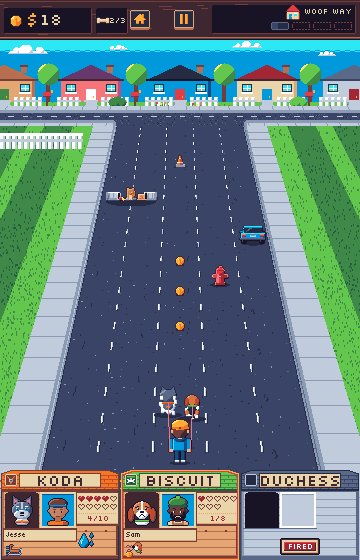
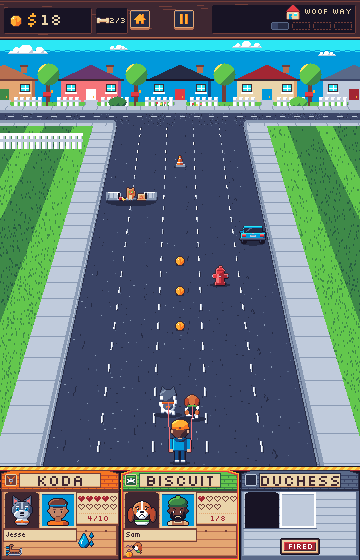
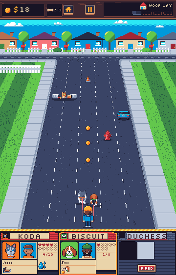
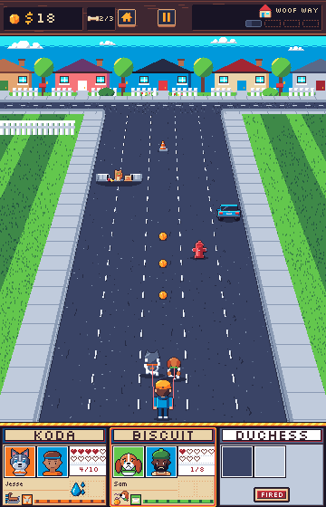
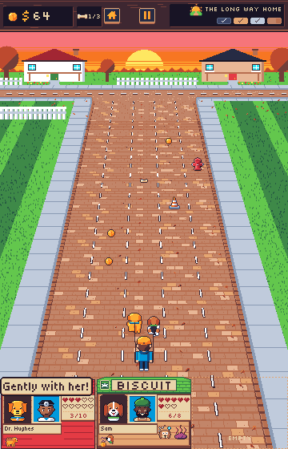
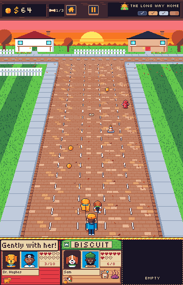
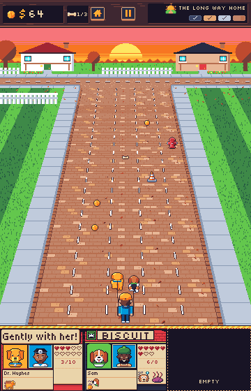
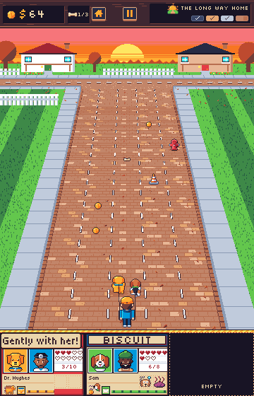

Doghouses
The doghouse row reads as part of the scenery: tan walls and green, orange and pink roofs match the lawns, brick roads and sunset skies, and the houses sit straight on the road. Three directions after 80s toy box packaging (the bold bottom band, the character file card, the logo plate), each in a full run frame with the real top bar, road, pack, backdrop, faces, hearts, statuses, quirk icons and quips. Every direction keeps ui-doghouse at 120x90 in today's slots, with every part the game draws where it is now.
Directions
- A. Box band. Today's houses on an ink band from row 466, under a divider lettered like the yard sign logo (ink, yellow and amber stripes, a dred shadow row, ink) on the road's last free rows under the walker's feet. Trade-off: one new image and no house redraw, but the roofs and tan walls keep the zone colours.
- B. Clubhouse. The band, with every house in one fixed palette: red roof, navy board walls, cream panels in ink, a yellow eave trim. The dog's colour is only its door, behind its face, and the gable vent's ring. Trade-off: keeps the doghouse and the dog in the door, but the name plate covers most of the roof, so the houses read alike apart from the doors.
- C. File card. The band, with each slot a character file card: cream stock in the UI chrome, a blue header filled by a 110px logo plate for the name, framed photos (the dog on its own colour, the owner on sky), a ruled hearts box, and the emblem as a badge beside a foot stripe in the dog's colour. Trade-off: the most distinct from every zone and the closest to the toy box; it drops the house silhouette, and the heart-loss flash has less body to colour.
Recommendation
C. File card on the box band. Its cream, blue and ink never change per zone, the dog's colour is confined to three framed spots, and the divider separates the band from the road on every zone. The wider plate also fits a name at 2x up to name.width (108): today's plate is 80 wide, so Snowball at 2x (96) runs over the gable vent.
Woof Way
Koda at 4 of 10 hearts and soaked, Biscuit at 1 heart under the warn rim, Duchess fired.




The Long Way Home
Penny on heart-loss frame 0 with her owner's quip over the roofs, Biscuit spooked and stinky, an owned empty slot.




What would change
ui-dog-band(new image, 360x94): the ink band with the divider on its rows 0 to 4, drawn by HudScene at (0, 466) under the slots, whichever slots are shown. It covers road rows 466 to 469; the walker's feet and shadow end on row 464. Tech adds adogBandregion (0, 466, 360x94) to the layout export.ui-doghouse: same 120x90, same tags (one per dog,empty,heart-loss), same slots and part positions, no change toDOGHOUSE. Rows 0 and 1 are clear so the divider's dred and ink rows run on above the card; the card is x 1 to 118, rows 2 to 89.ui-doghouse-warnand the heart-loss frames are redrawn to the card's silhouette.- The amber frame round an affected doghouse (
drawAffectedFrame) insets to the card: y + 2, height 88. - The fired label: HudScene tints "Fired" darkRed, on the plate's dred face; the art expects white (7.34:1), as these mocks draw it. This holds for today's house too.
- The owned empty slot keeps the game's dashed tan outline and cream "Empty", now on the band; a slot not bought shows the band.
- Art docs: the style guide's doghouse section and layout table, and the inventory rows for
ui-doghouse,ui-doghouse-warnand the band.